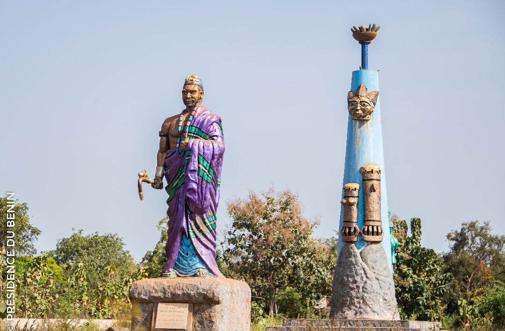

Ouèssè, l'âme du Bénin authentique
Découvrez les trésors culturels, naturels et artisanaux de notre commune, entre forêts sacrées, marchés traditionnels et hospitalité légendaire.
Destination Bénin : Ouèssè, deuxième réserve mondiale de marbre bleu, terre arrosée par sept rivières.

Présentation de la Commune de Ouèssè
La Commune de Ouèssè, vaste territoire situé au cœur du Bénin, est une destination dont le sous-sol regorge de la deuxième réserve mondiale de marbre bleu, derrière celle de l'Italie, notamment à Idadjo. Elle est également reconnue pour ses forêts classées, ses forêts sacrées, ses collines et ses forêts-galeries. Située au nord du département des Collines, à 327 km de Cotonou, elle couvre environ 3 200 km², soit 2,5 % de la superficie nationale. Elle est administrée par le Maire Ibidon Firmin Akpo et comprend neuf arrondissements : Challa-Ogoï, Djègbè, Gbanlin, Ikèmon, Kilibo, Laminou, Odougba, Ouèssè-Centre et Toui. La commune est limitée au nord par Tchaourou, au sud par Savè et Glazoué, à l'ouest par Bantè et Bassila, et à l'est par le Nigeria. Sa population est estimée à plus de 150 000 habitants, composée principalement des Shabè et des Mahis, auxquels s'ajoutent plusieurs autres groupes socioculturels. Son relief est peu accidenté et ses terres sont favorables à l'agriculture. Les principales cultures sont le maïs, le manioc, l'arachide, le riz, le haricot, le soja, le vouandzou et l'acajou. Grâce à une pluviométrie abondante, sept cours d'eau traversent la commune : l'Ouémé, l'Okpara, la Gbéffa, la Kilibo, la Liga, la Nonomi et la Toumi. Le premier souverain des terres de Ouèssè fut Sa Majesté Djahlin Djanta, alias Faka Foukou, qui régna de 1690 à 1720. Une imposante statue a été érigée en son honneur. Parmi les autres sites touristiques figurent les galeries souterraines (Odi) de Yaoui, les collines de Kèmon et les mares aux caïmans de Gbongui. La commune bénéficie également de plusieurs infrastructures modernes, notamment un stade omnisports de 3 000 places et l'Hôpital de Zone Savè-Ouèssè.
OUESSEXWE 2025
.jpg)
.jpg)
.jpg)
.jpg)
.jpg)
.jpg)
Découvrez Ouèssè en vidéo
Événements à venir
- Festival culturel de Ouèssè - 15 juillet 2025
- Marché artisanal - 20 août 2025
- Fête des rivières - 10 septembre 2025